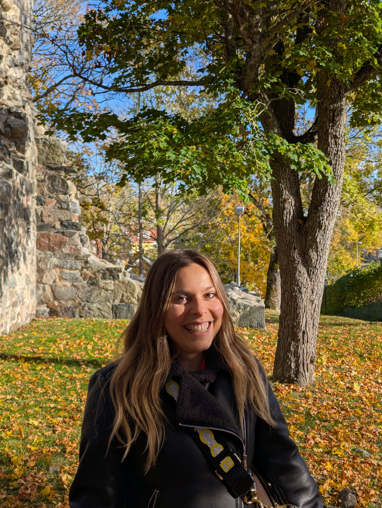

Martina Alutto
Postdoctoral Researcher
Division of Decision and Control Systems
KTH Royal Institute of Technology, Stockholm, Sweden
I am a postdoctoral researcher at KTH Royal Institute of Technology, working in the Division of Decision and Control Systems. My research focuses on the analysis and control of network systems, with applications to epidemics and complex social networks.
I collaborate with Prof. Angela Fontan and Prof. Karl Henrik Johansson, and I am affiliated with the Wallenberg AI, Autonomous Systems and Software Program (WASP).
I received my Ph.D. in Pure and Applied Mathematics from Politecnico di Torino (2024), with a thesis titled "Analysis and Control of Epidemics", supervised by prof. Fabio Fagnani and prof. Giacomo Como. I also completed my B.Sc. and M.Sc. in Mathematical Engineering at Politecnico di Torino. Before joining KTH, I was a Research Fellow at the National Research Council (CNR) in Torino (2024–2025), working with Prof. Chiara Ravazzi and Prof. Fabrizio Dabbene. I was a visiting researcher at Cornell University (2023–2024), the University of Tokyo and Kyushu University (2025).
Research Interests
- Analysis and control of network systems
- Behavioral feedback in epidemic spreading models
- Innovation adoption dynamics in social networks
- Opinion dynamics and complex social networks